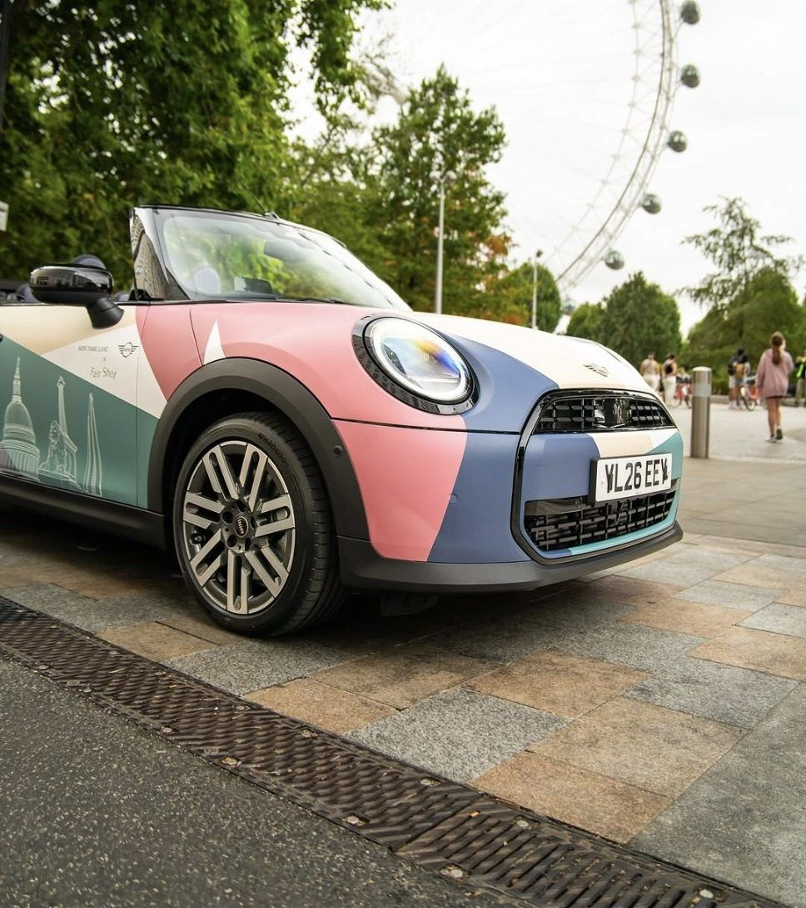

A MINI that wears London, and a courtyard too busy to keep serving.
MINI Park Lane took a Cooper Convertible to The Yards in Covent Garden for a single Saturday with Fair Shot, the social enterprise cafe and registered UK charity based there. We designed the livery and the identity that ran around it, from the boards at the entrances to the stickers on the cups, so one car became the reason to stop, look and stay.

Livery routes explored across two rounds before a direction was chosen
Hand-drawn London elements, briefed, redrawn and placed across the car
Colours in Fair Shot's palette, applied to their own documented rules
Days from brief to the car on display, with three approvals inside them
One car, one day, and a courtyard full of phones
The car would sit parked in a courtyard all day, so it had to hold attention close up and be worth photographing. A livery read at speed is a different problem, and that difference set every decision that followed.
Three signatures had to land before anything printed: Park Lane, then BMW corporate identity, then Fair Shot. Print and application sat with Park Lane's own fitter. From brief to the car on display took twenty-nine days, with all three approvals inside them.
A cafe that trains people into work, and an artist to brief
Fair Shot runs a year-long supported internship for young adults with learning disabilities and autism, then places graduates into paid roles with partner employers. That is the organisation the car was carrying, and the livery had to read as theirs. A retailer's promotion with a logo added would have missed the point.
Fair Shot's illustrator was going to draw the skyline. Left as one finished scene, the drawing could only have been dropped onto the car as a picture. We wrote the brief he drew to: separate drawings in place of a single scene, black linework with no fills and no backgrounds, and vector files where possible.
That request made the rest possible. Individual elements could be arranged to the body, scaled to the panels and coloured to Fair Shot's palette. He drew in his own style and the system made it work on the car. An eleventh drawing, a classic MINI, was left off because the car is a current one.
Seven ways to wear a city, and a colour case argued from Fair Shot's own rules
The first round ran four routes, separated by how much of the car was covered and how much drawing the artist would have to do, from fine ink on a white body to a full painted scene edge to edge. The second round narrowed to three. Each was drawn flat, fitted to the car in studio and placed on a street, so the choice was made against how the car would actually be seen.
The diagonal won. Colour fields rise across the flank and the skyline runs between the wheel arches as one continuous band.
Fair Shot's colour document assigns its colours as well as listing them. Contessa Red is their public brand colour. Dark Cyan Blue carries corporate partner communications. Willow Grove is their voice on social. Grey Orange belongs to the cafe and the learners, off-white is the ground, and Gold is documented as internal, for the team.
We argued the recommendation from those rules. A vehicle made with a corporate partner and photographed by the public is the wrong surface for an internal colour. Every colour field was then measured against the nearest palette value, and the one plane that did not match was corrected before the artwork went near print. Fair Shot's own feedback, when it came, asked for green in place of gold. The read held.
Placing the skyline, and holding the signature
Placing the elements was the work. St Paul's was raised so the dome cleared the body line. The London Eye came out for crowding everything beside it. The Gherkin came out, then went back in once the colour fields were angled to make room. The band was held between the wheel arches so the run reads as one skyline, with no shapes cut by an arch. The boot carries the Fair Shot coffee cup alone, because a skyline there would have been read from too close and too low.
BMW's retail signature has a fixed build: the retailer name, clear space, then the wings, with the partner beneath on the cross. Fair Shot asked to appear at equal size to MINI Park Lane. Both asks were reasonable and both could not be met.
We took the work to the closest compliant option and sent the conflict back to Park Lane in writing, so it was settled in the open and kept out of the artwork. Corporate identity rules on a marque vehicle are not a matter of preference, and a partner deserves to know where the limit sits.
Carried to the boards and the cups
A car on its own is an object in a courtyard. We extended the same system so the whole space belonged to the partnership: boards at the entrances, at the car and at the serve point, four faces in all, and round stickers for the cups, so the drink in someone's hand matched the car they had just photographed.
Busy enough to stop serving
The car went on display at The Yards on Saturday 15 August. Park Lane reported the courtyard busy enough that drinks service had to be paused more than once to manage the crowd, with people photographing the car throughout and conversations about it happening on the spot.
What changed.
One parked car carried a social enterprise's identity into a Covent Garden courtyard, signed off by Park Lane, BMW corporate identity and Fair Shot within twenty-nine days. On the day, the courtyard was busy enough that drinks service had to be paused more than once, with people photographing the car throughout.
Read it on pivitt.co.uk